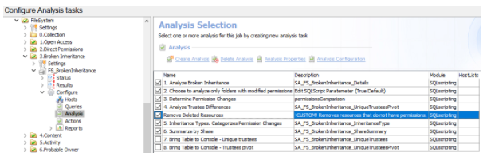

Summary: Resources that have been collected but have no permissions (either from FSAC scans w/o FSAA, or a deleted resource,) dilute the broken inheritance report with numerous rows of unusable data.
Issue: StealthAUDIT collects resources that may have been deleted, or were caught by FSAC agents as activity only but has not had an FSAA scan against it yet. In these cases, StealthAUDIT will recognize the delta between the parent (with permissions) and the resource with no permissions as a "broken Inheritance" situation. While this is technically true, it can clutter up the Broken Inheritance report with what to a customer feels like a false positive-it doesn't add any value and misses the intent of the report. This can be especially true in a very active share, where resources without permissions can greatly outnumber the amount of actual broken inheritance situations.
Instructions:
- Navigate to the customer's name/location of the '3. Broken Inheritance' job group. Click on the 'Analysis' node within the job.
- Select 'Create Analysis'. Name appropriately or according to the customer's wishes. Analysis module from dropdown is 'SQLscripting'. Click 'Configure Analysis'
- The following SQL should be copy/pasted into the new Analysis. It joins the current Broken Inheritance tables to the FSAA resources tables to determine which resources have NULL permissions:
DELETE FROM [dbo].[SA_FS_BrokenInheritance_UniqueTrusteesPivot]
WHERE [Resource] in
(select distinct b.[Resource] FROM
[dbo].[SA_FS_BrokenInheritance_Details] b
LEFT JOIN [dbo].[SA_FSAA_Resources] r
ON b.[HostID] = r.[Host]
AND b.[ResourceID] = r.[ID]
WHERE r.[RightsProxyID] IS NULL);
GO
DELETE
FROM [dbo].[SA_FS_BrokenInheritance_Details]
WHERE [ResourceID] IN (SELECT distinct b.[ResourceID] FROM
[dbo].[SA_FS_BrokenInheritance_Details] b
LEFT JOIN [dbo].[SA_FSAA_Resources] r
ON b.[HostID] = r.[Host]
AND b.[ResourceID] = r.[ID]
WHERE r.[RightsProxyID] IS NULL);
GO
- The new analysis MUST be placed in the proper sequence so that it occurs after the Broken Inheritance tables are populated, but before further analysis and reporting is done. The proper placement is in between analysis 4 and 5 in the out-of-the-box solution. Use drag-and-drop or the 'Move Up'/'Move Down' buttons at the bottom of the screen, ensure placement is similar to the example:

- No other changes are required, the job can now be scheduled/run as before.
Customer should be made aware that this does leave a small chance for a resource that has not been deleted, but was caught by FSAC and has not yet been scanned by FSAA. In this situation, we will not have permissions details for the new resource yet. However, upon the next FSAA scan it will rectify the misclassification. Since this takes some understanding of our scanning processes, the following steps may help illustrate to them with an example:
- Create New folder
- Assign distinct permissions (breaking inheritance, making it eligible for the broken inheritance report)
- FSAC scans pick this up, add a new resource entry to the resources table. No permission have been collected yet, so the permissions are listed as NULL even though they do exist.
- Run Broken Inheritance Job, it sees no permissions and now due to the new deletion steps, will remove it from the report even though it should belong.
This can be mitigated by only running the Broken Inheritance job as soon as possible after an FSAA scan. It is also considered a low chance/low risk occurrence, and was deemed acceptable by the customer when weighed against an unusable report as the alternative.
Product: StealthAUDIT
Module: SA - Solution Set - File System
Versions: 8.1+
Dev Ticket: SAFS-806 / SF00029158
Legacy Article ID: 2200